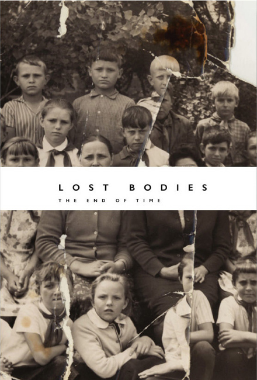

Εκεί που θα πάτε...
να προσέχετε που θα κολυμπάτε. | |
Εκεί που θα πάτε...
να προσέχετε τι θα φάτε. | |
Εκεί που θα πάτε...
να προσέχετε και που θα δώσετε τα χάδια σας. | |
Ke ta tropika ke exotika barakia mas gia na piume Kaipirinia SPECIAL.... | |
Kew ta karnavalia mas ta shetika mia ke oi Vrazilianoi den perimenun ton Flevari gia na to kapsun | |
ke tis psitumbes mas tis shetikes.. | |
Poly poly poly gamo !!!!!!!!!!!!!!!! | |
Ke gamo ta meri, ke apo vlastisi ZUMBER TROPIKALIA !!!!!!!!!!!!!!! | |
Την κάνατε όλοι για διακοπές κουφάλες;
Θα μείνω μόνος στην μεγάλη πόλη λοιπόν;
(Δεξί κλικ στην εικόνα η για να
την σώσετε, η για view image...
απόλαυση σε μεγάλο μέγεθος)
Καλές βουτιές. | |
Ηλιούπολη; Που είναι η Ηλιούπολη;
Δεν ξέρουμε καμιά Ηλιούπολη. | |
Η μόνη-λυνση, είναι να ''ερωτευτείς'' ξανά.
[download mp3: cash] | |
Life is good τελικά.
[download mp3: donkey] | |
Θέλει τόλμη η ευτυχία/
να τη συναντήσεις/ μες στις πύρινες λεπίδες/ που σε ζώνουν,/
όταν γύρω απ' την πληγή σου/ σαν ηφαίστεια ανοιχτά/
το κουράγιο και την πίστη/ προσπαθούν να σου λιώσουν.
Άρης Χαραλαμπάκης
[download mp3: truth-from-fiction] | |
Τώρα θα ησυχάσεις για πάντα,
κουρασμένη καρδιά μου.
Χάθηκε κι η τελευταία αυταπάτη,
που την είχαμε γι' αθάνατη.
Χάθηκε.
Καλά το ξέρω πως μέσα μας για τις γλυκές πλάνες,
όχι μόνον η ελπίδα αλλά κι ο πόθος έχει σβήσει.
Αναπαύσου για πάντα.
Αρκετά καρδιοχτύπησες.
Τίποτα δεν αξίζει τους παλμούς σου.
Σωτήρης Παστάκας
[download mp3: breathe-me] | |
Η στενοχώρια δεν έχει σχέση με τη κατάθλιψη.
Η στενοχώρια συνοδεύει την αποδοχή του συμβιβασμού.
Η κατάθλιψη αντιμάχεται την αποδοχή…
[download mp3: gabriel] | |
Γλυπτά έχουν βρεθεί ακόμα και από την εποχή των σπηλαίων.
Από κοχύλια, πέτρα και ξύλο.
Οι στήλες των Αιγυπτίων δεν είναι στην ουσία γλυπτά όσο είναι χαρακτικά.
Το γλυπτό είναι τρισδιάστατο. | |
Τα αρχαιότερα γλυπτά έχουν βρεθεί στη σημερινή Ωκεανία και τα περισσότερα,
είναι από λιωμένη πέτρα ηφαιστείου και άλλα από ξύλο. | |

Αν και τα μέσα χάραξης και λάξευσης ήσαν ελάχιστα και θα φανταζόταν κανείς,
ότι τα γλυπτά θα μπορούσαν να είναι μόνο μικρά σε μέγεθος...
και θα κάναμε όλοι λάθος.
Τα γιγαντιαία γλυπτά στα νησιά του Πάσχα μας αποδεικνύουν το αντίθετο.
Το τεράστια κεφάλια ύψους 15 μέτρων που αγναντεύουν ήρεμα τη θάλασσα,
παραμένουν ακόμα και σήμερα μυστήριο.
Εξηγήσεις πολλές...(εγώ θα πάω με εκείνη που λέει για εξωγήινους), | |
Όλοι μας λίγο πολύ έχουμε ασχοληθεί με την γλυπτική.
Από μια κατασκευή με σπίρτα η ξυλάκια παγωτού...
μέχρι και παλάτια στην άμμο. | |
Το μόνο κακό είναι, ότι δεν θα μάθουμε ποτέ, αν και οι πρόγονοι
έχτιζαν παλάτια στην άμμο...η και ολόκληρες παραστάσεις πολιτειών
και καθημερινών εργασιών.
Οπότε...αν και το μάρμαρο και ο χυτοσίδηρος μπορεί να έχουν διάρκεια ως υλικά...
η φαντασία μας είναι άυλη και αχαλίνωτη να δημιουργεί και να γκρεμίζει όπως βολεύει. | |
΄Ολα έτοιμα κουκλιά μου.
ΠΟΛΛΛΛΛΛΛΛΛΑ ΦΙΛΙΑ | |
Απο εδώ και πέρα θα ανεβάζω απο Βραζιλία, ωστόσο στα πλατό θα είναι ο Μαστρ-Αντώνης.
Μουσική μέχρι να αναλάβει ο μαιτρ... | |
Οι πιο μεγάλοι είναι εκείνοι οι άνθρωποι που τόλμησαν να εμπιστευτούν τη δική τους κρίση – το ίδιο και οι πιο ηλίθιοι.
Βαλερύ
| |
Ότι ισχύει για την ορμική ζωή, ισχύει εξ ίσου και για την πνευματική, ο ζωγράφος ή ο συνθέτης που απαγορεύει στον εαυτό του ένα συνδυασμό χρωμάτων ή τη σύνθεση μιας συγχορδίας ως κιτς, ο συγγραφέας τον οποίο εκνευρίζουν ορισμένοι γλωσσικοί σχηματισμοί ως τετριμμένοι ή σχολαστικοί, αντιδρούν με τόση σφοδρότητα εναντίον τους, γιατί μέσα στους ίδιους υπάρχουν στιβάδες που τους ελκύουν προς τα εκεί.
Η αποκήρυξη των κυρίαρχων πολιτιστικών τερατομορφιών προϋποθέτει ότι έχει αντλήσει δυνάμεις από αυτή τη συμμετοχή για τη καταγγείλει.
Οι δυνάμεις που καταγγέλλουν, είναι η διανοητική συνείδηση που έχει ένα κοινωνικό στοιχείο όπως ακριβώς το ηθικό υπερεγώ. Μόλις όμως αυτή η παράσταση χάσει την ενάργεια της, η διανοητική ροπή προς τα κάτω χάνει τις αναστολές της και έρχονται στο φως η χοντροκοπιά και η φορτικά αδέξια οικειότητα. Αυτό εκλογικεύεται ως η θέληση να γίνει κανείς κατανοητός από τους άλλους.
Οι πτωχευμένοι στο πνεύμα πορεύονται ενθουσιασμένοι στη κόλαση που είναι ο παράδεισος τους.
THEODOR ADORNO
| |
Η αλήθεια που με δίδαξε ο κόσμος είναι ότι το πνεύμα δεν σημαίνει τίποτα, ούτε και η ίδια η καρδιά. Η πέτρα που ζεματάει από τον ήλιο, το κυπαρίσσι που ο ασκεπής ουρανός μεγεθύνει, η ευτυχισμένη χαλαρότητα της γαμήλιας μέρας με τον κόσμο. Μαθαίνω να αναπνέω, νιώθω να ταυτίζομαι με τα πάντα, νιώθω να ολοκληρώνομαι. Με τόσο ήλιο στο μυαλό, πώς μπόρεσα να αυτομολήσω προς την ανόητη μεριά του κόσμου; Θα μπορούσα να απαντήσω στον εαυτό μου και στους άλλους, πως αυτός που με έσπρωχνε κατά’ κεί ήταν ο ήλιος. Το ίδιο το φως του, που με ασύλληπτη πυκνότητα στερεοποιεί το σύμπαν και τις μορφές σε μια σκοτεινή ακτινοβολία.
Άλμπερ Καμύ
| |
Οι θεοί και η εξουσία επάνω, κάτω ο τόπος της τιμωρίας και της εξορίας. Το πάνω και το κάτω έχουν συγκεκριμένο συμβολισμό και προορισμό και είναι ένα από τα οικουμενικότερα και ανθεκτικότερα αρχέτυπα, ο άξονας του κόσμου, όπου πάνω του πραγματοποιείται το πέρασμα από τη μία περιοχή στην άλλη. Στον ίδιο άξονα η πύλη του ουρανού και της κόλασης. Οι επαναστατημένοι άγγελοι πέφτουν. Τα ανώτερα κοινωνικά στρώματα. Εξέγερση είναι η πάλη του κάτω με το πάνω. ΄΄Πολιορκητές του ουρανού ΄΄ ονομάστηκαν οι επαναστάτες της κομμούνας του Παρισιού από τον Μάρξ.
IAN KOTT
| |

Νέο cd από Lost Bodies.
“Να πήξει ο χρόνος και η πληγή του να γίνει μια αόρατη ουλή
πάνω στο σώμα του κόσμου”.
Περιέχει ένα κομμάτι 72 λεπτά μόνο μουσική.
Κυκλοφορεί σε 126 αριθμημένα αντίτυπα, μπορείτε να το προμηθευτείτε μέσω του : lost@lostbodies.gr
| |
μετά απ'αυτό...το χειμώνα πια. | |
Έμψυχος είναι ο κόσμος και γεμάτος Θεούς.
Θαλής
| |
Καπιταλισμός χωρίς χρεοκοπία είναι σαν χριστιανισμός χωρίς κόλαση.
Frank Borman
| |

Σας δίνω πικρά χάπια σε ζαχαρένιο περίβλημα. Τα χάπια είναι ακίνδυνα, το δηλητήριο κρύβεται στη γλύκα.
Lec Stanislaw Jerzy
| |
Έτσι διαγώνια και προς τα πάνω, σα παλιός καθρέφτης κρεμασμένος στον τοίχο, διαγράφονται οι σκαλιστοί ορθοστάτες από το παλιό έπιπλο με το μάρμαρο επάνω. Η συμμετρία τους που τόσα χρόνια δεν την είχανε προδώσει ποτέ, τώρα αλλοιώνεται, υγροποιείται, γίνεται ακόμα πιο πλαστική, πιο κυματιστή. Οι γραμμές τους γίνονται αφύσικα πλαδαρές, διογκώνονται σε πολλά διαφορετικά σημεία κάνοντας τις φόρμες τους αλλόκοτες. Ο χώρος μέσα στη λεκάνη με το νερό φτάνει για να ενώσει καθρεφτίζοντας τους αντικριστούς βαστάζους από καρυδιά στο βαρύ παλιομοδίτικο έπιπλο.
Ένα παιχνίδι αταίριαστο με τη σοβαρότητά τους.
Το νερό ζητάει να γυρίσει στο νερό, τα κρεμαστά δάκτυλα ξέρουν και περιμένουν τη στιγμή που θα μείνει μόνο αυτό που πρέπει να μείνει, τα χέρια πρέπει να στραγγίξουν πριν αρχίσουν να εργάζονται πάνω στον πηλό. Ο καθαρμός έχει γίνει, η ηρεμία έχει αποκατασταθεί στην επιφάνεια του νερού˙ οι ορθοστάτες τώρα καθρεφτίζονται όπως και πριν˙ τώρα τα χέρια κατευθύνονται με σιγουριά, αγκαλιάζουν, βυθίζονται, κόβουν, πλάθουν, χαϊδεύουν.
Τα χέρια αποφασίζουν για τη μορφή, για την ένταση ή την γαλήνη. Για τη λάμψη θα αποφασίσει η ψυχή.
| |
Στο φώς της ημέρας
η πυγολαμπίδα είναι ένα έντομο
όπως όλα τα άλλα
Μ Μπασό
| |
Το παιδί λέει : Πάλι ! Είναι η αισθητική του κρίση.
Βαλερύ
| |
Ακριβώς όπως ο κόσμος είναι κάθε φορά και ποιό ντελιριακός˙
έτσι, πρέπει να τον αναλύσουμε με ένα ντελιριακό τρόπο.
Baudrillard
| |

Όποιος δεν είναι κακός δεν ζει γαλήνια ούτε ανεκτικά, αλλά έχει σκληρυνθεί κατά ένα ιδιάζοντα, ντροπαλό τρόπο. Από έλλειψη κατάλληλων αντικειμένων δύσκολα βρίσκει κατάλληλο τρόπο να εκφράσει την αγάπη του παρά μισώντας τα ακατάλληλα.
Theodor Adorno
| |
Ήταν τύχη που τον είδαν σαν παλιάτσο, σαν τρελό και γέλασαν μαζί του, γιατί στα αλήθεια τον μισούσαν οι αγαθοί και οι δίκαιοι
και τον ονόμασαν εχθρό τους και περιφρονητή τους
Και τον μισούσαν και οι πιστοί της σωστής πίστης.
Νίτσε
| |
ρε κάτσε κάτω που θέλεις και Βραζιλία... | |
ρε κάτσε κάτω που θέλεις και Βραζιλία... | |
ρε κάτσε κάτω που θέλεις και Βραζιλία... | |
|
35 readers online
|